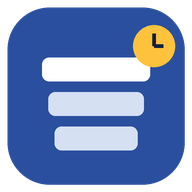

My Topics Hub
Add your Topics Hub to your desktop, shelf or taskbar. After this, one click opens it.
Your browser asks you to confirm. Click Install again.
Your browser does not offer a one-click install here.
Installed. Look for the My Topics Hub icon on your desktop, shelf or taskbar.
This page needs the link to your Topics Hub. Open your Topics Hub in Claude and click Add to my desktop at the top right.
Your Topics Hub link is saved only in this browser. It is never sent to Doovli. Topics Hub with Hour Finder™, version 1.2. (c) 2026 Rich Henderson. CC BY-NC 4.0.